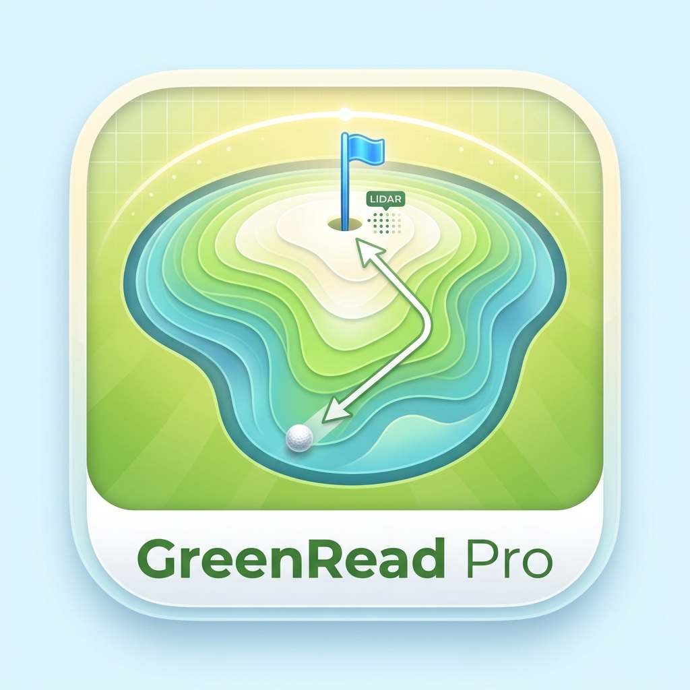

グリーンリード プロ - ゴルフグリーン傾斜測定＆ライン読み支援
GreenRead Pro（グリーンリード プロ）は、iPhone / iPad の LiDAR スキャナとカメラを使って ゴルフグリーン上の傾斜を計測し、パッティングのライン読みを支援する計測補助アプリです。
実際のボールとピン（旗）を画面に合わせ、端末の傾きを水平に整えるだけ。 距離・高低差・ブレイク（曲がり）・下り坂の向き・予想される転がりラインを、 カメラ映像の上にそのまま重ねて表示します。
面倒なアカウント登録は不要で、計測はすべて端末内で完結。 電波の届かないコースでも、そのままお使いいただけます。
LiDAR スキャナが捉えたグリーン面の3次元形状から傾斜を推定し、下り坂の向きを矢印で表示します。
画面を押さえると表示される拡大円で、実際のボールとピンに正確に位置合わせ。自動切替にも対応します。
ボールからピンまでの3D直線距離を m / cm / yd で表示。打ち上げ（＋）・打ち下ろし（−）の高低差も一目で分かります。
ボールが曲がる量と方向（H＝左 / S＝右）を算出。グリーン速度の設定に応じてブレイクの配分を調整します。
予想されるパッティング軌道を青い曲線で、狙う方向を赤い点線で表示。ラインの読みを視覚的にサポートします。
X / Y メーターで端末の水平をガイド。0° 近傍にそろうと自動でホールドし、測定値が確定します。
ボールからピンまでの高低変化を断面図で表示。起伏の傾向を、数字だけでなく形でも確認できます。
細かくカスタマイズした設定を JSON ファイルに書き出し・復元。機種変更や再インストール時も安心です。
実際のボールとピンが映るように端末を構え、拡大円の十字をボールに合わせます。
同じように拡大円の十字をピン（旗）に合わせると、測定値の表示に切り替わります。
メーターの針が 0° 近傍にそろうと自動ホールド。ラインと測定値を確認できます。
※ 端末を水平に保ち、ボールとピンを画面中央付近に置くと、より安定した計測ができます。
初回起動時のメッセージで「OK」を選ぶと、累積1時間まですべての機能を無料でお試しいただけます。 体験時間が終了すると、機能限定の体験版へ自動的に切り替わります。
全機能版は買い切り（非消耗型）のアプリ内課金です。購入すると、次の内容が利用可能になります。
購入は Apple ID に永続的に紐付くため、機種変更や再インストール後も 「購入をリストア」から無料で復元できます。価格は App Store の購入画面に表示されます。
計測データや設定内容は、すべてお使いの端末内にのみ保存されます。 カメラや LiDAR で取得したデータは計測処理のみに利用され、外部サーバーへ送信されることはありません。 アカウント登録も不要です。